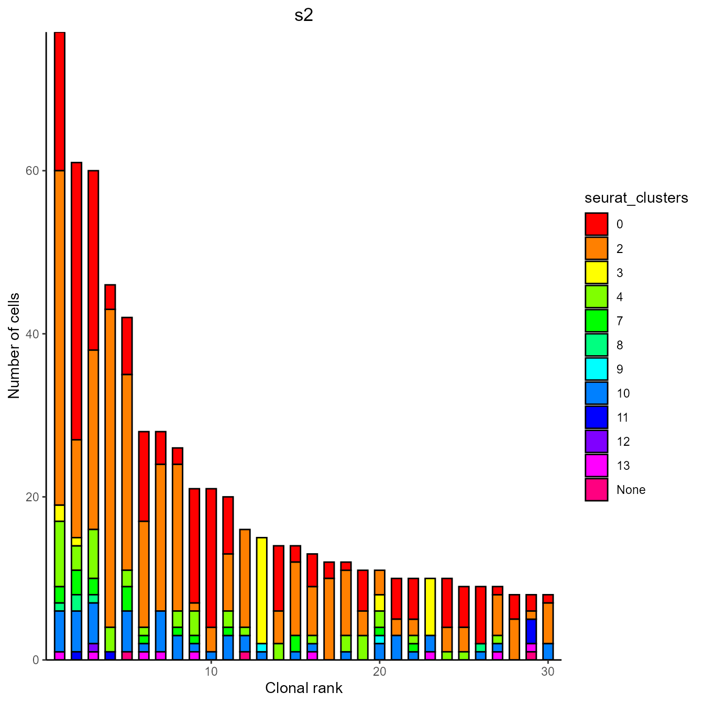
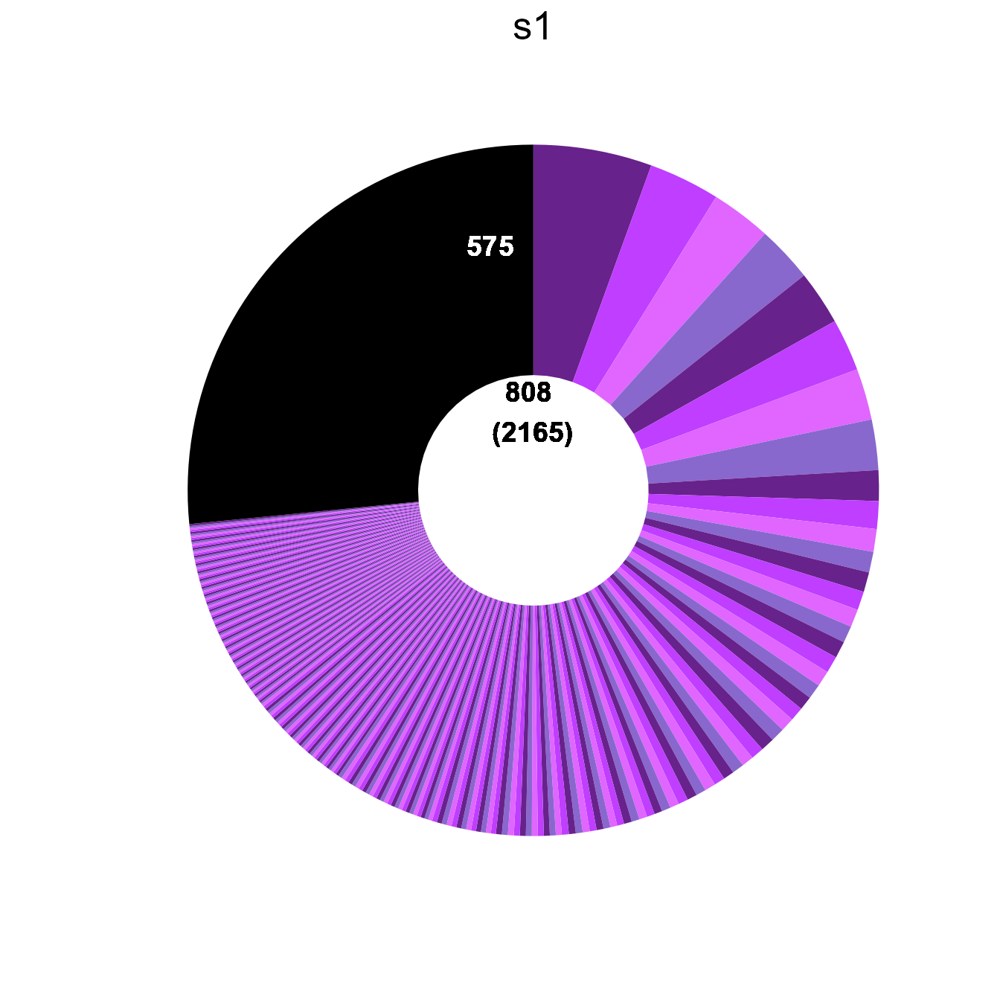
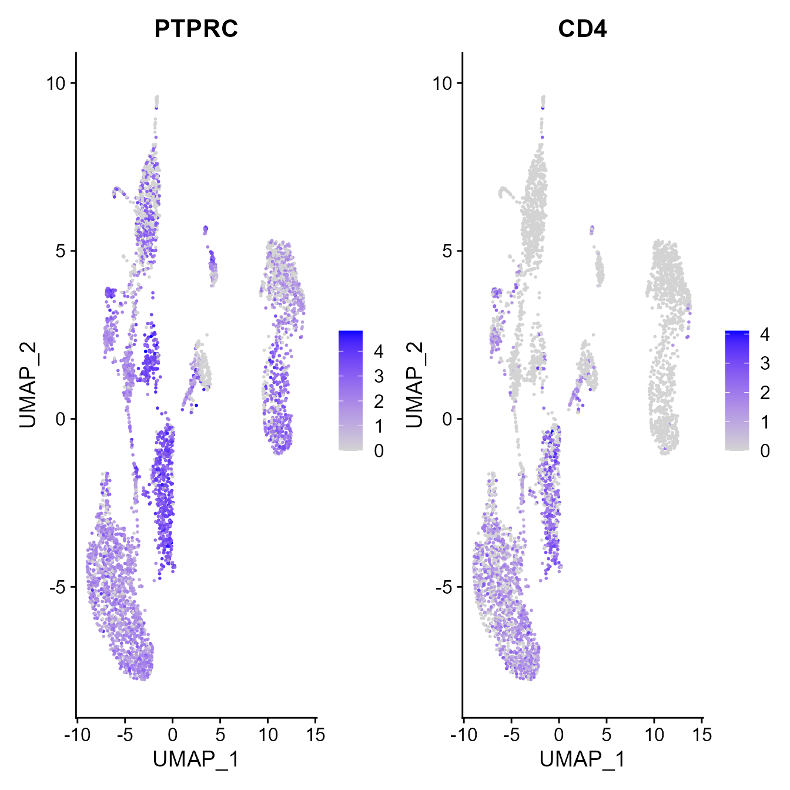
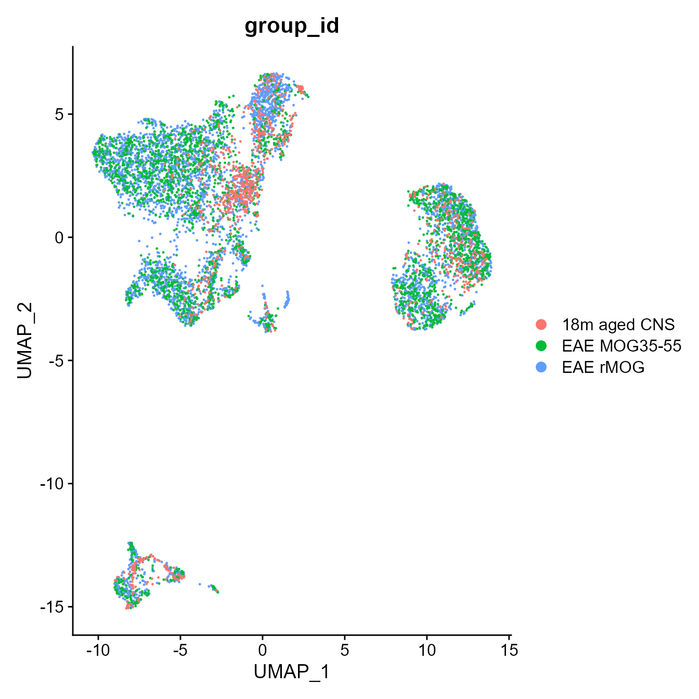
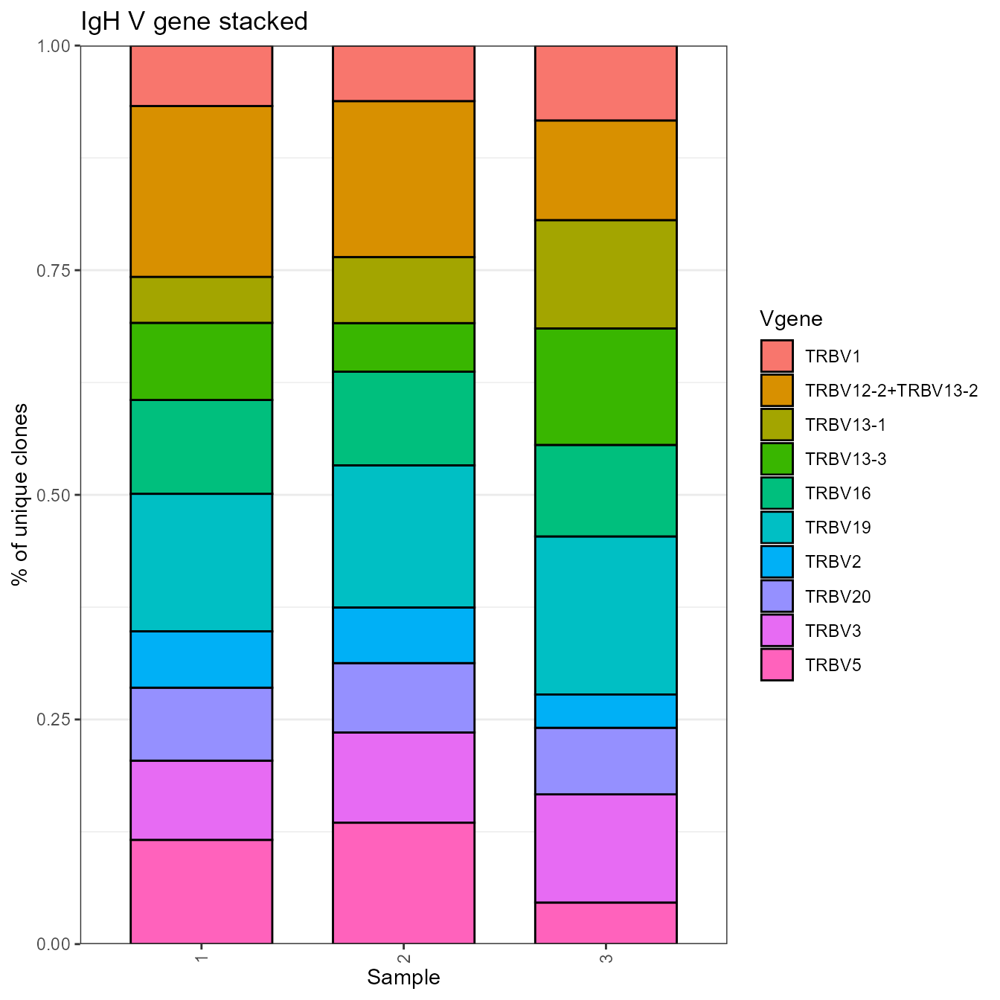

vignettes/PlatypusDB.Rmd
PlatypusDB.RmdPlatypusDB is a publicly available database for combined gene expression and immune receptor sequencing datasets. The package Platypus provides and easy-to-use R interface to source available data, integrate it with locally saved datasets and comprehensively analyse VDJ and GEX data. For more information on the analysis function of the Platypus package please refer to the corresponding vignette. Here only the functions concerning interaction with the PlatypusDB will be covered.
Source code can be found at github.com/alexyermanos/Platypus More information and direct download links can be found on the joint Platypus and PlatypusDB website:
Due to the recent changes of the default clonotyping strategy in Cellranger (version 5 and version 6) we are currently rebuilding v3 of Platypus to revolve around the VDJ_GEX_matrix function (vgm for short). This function integrates both repertoire and transcriptome information and will serve as the input to all secondary functions in future iterations of the package. The advantage of this is having all repertoire and transcriptome information at a per-cell level.
The change in clonotyping can be found here - https://support.10xgenomics.com/single-cell-vdj/software/pipelines/latest/algorithms/clonotyping
The VDJ_GEX_matrix function will soon be found in the newest version of the R package (v3.0) with special thanks to Victor Kreiner. The current functions and documentation can be found already at https://github.com/alexyermanos/Platypus/blob/Functions/R/VDJ_GEX_matrix.R All other functions are already or in the process of being updated. A function which is available for V3 as a new parameter “platypus.version” which can be set to either “v2”, for backcompatibility or “v3”. Few new functions are only compatible with “v3”
Can stay tuned for updates https://twitter.com/AlexYermanos
### Removing any previous versions of the package
#First can ensure that there is no previous version installed locally
#detach("package:Platypus", unload=TRUE)
#remove.packages("Platypus")
### Dependencies
#install.packages("stringr")
### Downloading and installing Platypus
# First we need to download the most recent version from the master branch at https://github.com/alexyermanos/Platypus we can install the package using the following command.
# WARNING: This needs to be replaced with your own directory where the downloaded package is found
# For MacOS users it may look like this
#install.packages("~/Downloads/Platypus_3.1.tar.gz", repos = NULL, type="source")
# For windows it will likely look something like this.
# WARNING: You will need to replace 'YourPCName' with your user name for the windows account in the directory.
#install.packages("C:/Users/YourPCName/Downloads/Platypus_3.1.tar.gz", repos = NULL, type="source")
# Now we can load the installed package into the R environment. In case of problems with installing other R packages that are used in Platypus, please see the README file at the https://github.com/alexyermanos/Platypus, where we outline how to install the other R packages for both Windows and MacOS.
library(Platypus)
# The individual R functions can additionally be found on the github in the Functions branch. Within this branch, there is a folder "R" which contains the individual functions. This can similarly be downloaded and loaded into the R environment in case not all functions are desired. These functions are actively updated and may include more features than the in original tar.gz file. To get familiar with the database, we download a list of the hosted projects and their metadata.
projects_metadata <- PlatypusDB_list_projects()## [1] "Fetching list of all projects..."
## [1] "Downloading metadata list..."
## [1] "Done"Get the project IDs, which will used for downloading projects below:
Project IDs are composed of the first authors surname, the year of publication and optionally a letter for unique identification
names(projects_metadata)## [1] "Kuhn2021a" "kreiner2021a" "kreiner2021b"
## [4] "merkenschlager2021a" "neumeier2021a" "yost2019"For this example, we are interested in a dataset of central nervous system-infiltrating lymphocytes in experimental autoimmune enchepalomyelitis (EAE), a mouse model of multiple sclerosis.
Two datasets are available for this project: kreiner2021a and kreiner2021b
We view the metadata to get information specific to these projects and their samples
#use View(projects_metadata[["kreiner2021a"]]) for a full overview
projects_metadata[["kreiner2021a"]][1:2,]## V1 V2 V3 V4 V5
## 1 publication.title organism celltype n authors
## 2 N/A mouse T cells 3 Alexander Yermanos, Victor Kreiner
## V6 V7 V8 V9
## 1 date journal doi correspondence.adress
## 2 31.08.21 N/A N/A ayermanos@gmail.com
## V10
## 1 comments
## 2 T cells from brain and spinal cord of EAE by rMOG or MOG35-55 induction
## V11 V12 V13 V14 V15 V16
## 1 [Free.item] [Free.item] [Free.item] [Free.item] [Free.item] [Free.item]
## 2
## V17 V18 V19 V20 V21 V22
## 1 [Free.item] [Free.item] [Free.item] [Free.item] [Free.item] [Free.item]
## 2
## V23 V24 V25 V26 V27 V28
## 1 [Free.item] [Free.item] [Free.item] [Free.item] [Free.item] [Free.item]
## 2
## V29
## 1 [Free.item]
## 2
projects_metadata[["kreiner2021b"]][1:2,]## V1 V2 V3 V4 V5
## 1 publication.title organism celltype n authors
## 2 N/A mouse T cells 3 Alexander Yermanos, Victor Kreiner
## V6 V7 V8 V9
## 1 date journal doi correspondence.adress
## 2 31.08.21 N/A N/A ayermanos@gmail.com
## V10
## 1 comments
## 2 B cells from brain and spinal cord of EAE by rMOG or MOG35-55 induction
## V11 V12 V13 V14 V15 V16
## 1 [Free.item] [Free.item] [Free.item] [Free.item] [Free.item] [Free.item]
## 2
## V17 V18 V19 V20 V21 V22
## 1 [Free.item] [Free.item] [Free.item] [Free.item] [Free.item] [Free.item]
## 2
## V23 V24 V25 V26 V27 V28
## 1 [Free.item] [Free.item] [Free.item] [Free.item] [Free.item] [Free.item]
## 2
## V29
## 1 [Free.item]
## 2kreiner2021a contains data of T cells, while kreiner2021b concernes B cells.
Sample specific information in the table are below
projects_metadata[["kreiner2021a"]][5:9,]## V1 V2 V3 V4 V5 V6
## 5 Sample specific info
## 6 sample_id batch_id full.name description [Free.item] [Free.item]
## 7 s1 b1 rMOG_1 Mouse 1
## 8 s2 b1 rMOG_2 Mouse 2
## 9 s3 b1 MOG35-55 Mouse 3
## V7 V8 V9 V10 V11 V12
## 5
## 6 [Free.item] [Free.item] [Free.item] [Free.item] [Free.item] [Free.item]
## 7
## 8
## 9
## V13 V14
## 5
## 6 [Free.item]
## 7
## 8
## 9
## V15
## 5 README
## 6 Insert information as column names suggest.
## 7 [Free.item] columns are for custom input. Please add an appropriate colum name without whitespaces, upper case letters and special characters
## 8 Free items for samples may include: organ / cellcount / timepoint etc.
## 9 When done: Save table as .csv with the name PlatypusDB_metadata_[project name] and submit with project Cellranger output
## V16 V17 V18 V19 V20 V21 V22 V23 V24 V25 V26 V27 V28 V29
## 5
## 6
## 7
## 8
## 9This dataset therefore contains three samples s1 - s3 with different immunization procedures.
To download data we used the PlatypusDB_fetch function. In the following several use cases are exemplified
The basis for all are PlatypusDB.links, with which any combination of files can be easily specified They are composes of three section divided by “/” 1. project_id (Author2019letter, … ) 2. sample_id (s1, s2, s3, …) 3. filetype (VDJmatrix, GEXmatrix, metadata, VDJ, GEX)
Any of these components can be substituted with “ALL”. Further sample_id can be substituted with "". (See examples below)
Given that the VDJ_GEX_matrix is a project-level file, we do not have to specify a sample_id. Further, because we wish to get a full VDJ_GEX_matrix, we have to download both the GEXmatrix as well as the VDJmatrix file and combine them. This is done automatically.
PlatypusDB_fetch(
PlatypusDB.links = c("kreiner2021a//ALL"), #specifing no sample id and downloading all project level data available
save.to.disk = F, #Whether to save it to a specified path. Necessary if download size exceeds available RAM
load.to.enviroment = T, #Whether to load into the enviroment directly
load.to.list = F, #Whether to return a list of loaded objects
combine.objects = T, #Whether to combine objects appropriately. Needed here to get the full VDJ_GEX_matrix
path.to.save = "~/Downloads/PlatypusDB_downloads/") #optional argument## [1] "Input paths checked. Getting lookup table..."
## [1] "Got lookup table"
## [1] "For input array[1] 2 files were selected, with a total size of 984101 bytes"
## [1] "2021-09-21 14:11:00: Starting download of kreiner2021a__VDJmatrix.RData..."
## [1] "2021-09-21 14:11:01: Starting download of kreiner2021a__GEXmatrix.RData..."
## [1] "Done with kreiner2021a__VDJGEXmatrix!"
## [1] "2021-09-21 14:13:09: Done"
## [1] "Returning names of loaded objects"## [1] "kreiner2021a__VDJGEXmatrix"Within the R Enviroment a new object has appeared: kreiner2021a__VDJGEXmatrix
This has the same structure as the output of the VDJ_GEX_matrix function and can be directly used as input to platypus functions
plots <- VDJ_clonal_expansion(VDJ = kreiner2021a__VDJGEXmatrix[[1]], clones = 30, color.by = "seurat_clusters", group.by = "sample_id")## [1] "Selected Tcells"
plots[[1]][[2]]
Here we also exemplify loading objects as a list
loaded_list <- PlatypusDB_fetch(
PlatypusDB.links = c("kreiner2021a//VDJmatrix"),
save.to.disk = F,
load.to.enviroment = F,
load.to.list = T) #Returns a list containing the downloaded objects## [1] "Input paths checked. Getting lookup table..."
## [1] "Got lookup table"
## [1] "For input array[1] 1 files were selected, with a total size of 984100 bytes"
## [1] "2021-09-21 14:13:10: Starting download of kreiner2021a__VDJmatrix.RData..."
## [1] "Done with kreiner2021a__VDJmatrix!"
## [1] "2021-09-21 14:13:11: Done"
## [1] "Returning list of loaded objects"Again, we can directly call platypus functions on this output
plots <- VDJ_clonal_donut(VDJ = loaded_list[[1]][[1]])## [1] "Using counts of entries in the VDJ GEX matrix"## `summarise()` has grouped output by 'sample_id'. You can override using the `.groups` argument.## [1] "----------"
## [1] "Sample: s1"
## [1] "Clones: Expanded: 233 / 28.84%; 1 cell 575 / 71.16%; total: 808"
## [1] "Cells: Expanded: 1590 / 73.44%; 1 cell 575 / 26.56%; Total: 2165"
## [1] "----------"
## [1] "Sample: s2"
## [1] "Clones: Expanded: 133 / 23.84%; 1 cell 425 / 76.16%; total: 558"
## [1] "Cells: Expanded: 978 / 69.71%; 1 cell 425 / 30.29%; Total: 1403"
## [1] "----------"
## [1] "Sample: s3"
## [1] "Clones: Expanded: 144 / 31.1%; 1 cell 319 / 68.9%; total: 463"
## [1] "Cells: Expanded: 923 / 74.32%; 1 cell 319 / 25.68%; Total: 1242"
plots[1]## [[1]]
If we wish to recalculate the VDJ_GEX_matrix for a single sample, we can download the appropriate files and input those to the function
data_for_VGM <- PlatypusDB_fetch(
PlatypusDB.links = c("kreiner2021a/s1/ALL"),
save.to.disk = F,
load.to.enviroment = F,
load.to.list = T,
combine.objects = T)## [1] "Input paths checked. Getting lookup table..."
## [1] "Got lookup table"
## [1] "For input array[1] 2 files were selected, with a total size of 15500000 bytes"
## [1] "2021-09-21 14:13:13: Starting download of kreiner2021a_s1_VDJ.RData..."
## [1] "2021-09-21 14:13:13: Starting download of kreiner2021a_s1_GEX.RData..."
## [1] "Done with kreiner2021a_s1_VDJGEXdata!"
## [1] "2021-09-21 14:13:15: Done"
## [1] "Returning list of loaded objects"
s2_VGM <- VDJ_GEX_matrix(Data.in = data_for_VGM)## Loaded functions
## Loading in data
## [1] "2021-09-21 14:13:16 CEST"
## Loaded VDJ data from Data.in
## [1] "2021-09-21 14:13:16 CEST"
## Loaded GEX data from Data.in
## [1] "2021-09-21 14:13:16 CEST"## Warning: Feature names cannot have underscores ('_'), replacing with dashes
## ('-')## Loaded FB data from data.in
## [1] "2021-09-21 14:13:16 CEST"
## Getting VDJ GEX stats
## Starting with 1 of 1...
## [1] "C:/Dokumente usw/Master/Reddy Lab/1_thesis/2_raw data/EAE_n3/tcell/S1"
## Getting lookup tables...
## Getting 10x stats
## Done with VDJ_GEX_stats
## Got VDJ GEX stats
## [1] "2021-09-21 14:13:17 CEST"
## For sample 1: 4461 cell assigned barcodes in GEX, 2178 cell assigned high confidence barcodes in VDJ. Overlap: 2165
## Starting VDJ barcode iteration 1 of 1...
## [1] "2021-09-21 14:13:17 CEST"
## Done with 1 of 1
## [1] "2021-09-21 14:13:26 CEST"
## Starting GEX pipeline## Centering and scaling data matrix## PC_ 1
## Positive: LYZ2, CD14, FCER1G, TGFBI, TYROBP, CSF1R, TLR2, ALOX5AP, PLA2G7, FCGR3
## MAFB, IL1B, CD68, C5AR1, TGM2, CFB, FN1, CSF2RB, APP, CTSL
## CHIL3, CXCL16, CXCL2, IL1RN, GRN, C1QB, CD300C2, FCGR1, THBS1, MMP14
## Negative: NKG7, GRAP2, CXCR6, GM2682, THEMIS, CD8B1, CAMK4, TIGIT, TMSB10, CTLA2A
## ATXN1, LEF1, S100A6, KLRC1, ST6GALNAC3, CRIP1, GM42418, TNFRSF4, CTLA4, IL12RB2
## SIDT1, CXCR3, BCL2, TCF7, IL2RA, RUNX2, ZEB1, NMRK1, CCL5, SNTB1
## PC_ 2
## Positive: EBF1, CD79A, H2-EB1, H2-AA, H2-AB1, CD74, BANK1, H2-DMB2, LYN, LY6D
## NAPSA, MS4A1, MEF2C, FOXP1, FCMR, H2-OB, SYK, CD79B, GM43305, CCR7
## BLNK, CD83, PLAUR, CD19, SCD1, UNC93B1, AFF3, PKIG, POU2AF1, IMMP2L
## Negative: S100A4, LGALS1, CXCR6, ANXA2, AW112010, S100A6, TAGLN2, VIM, GAPDH, BCL2A1B
## TNFRSF4, ACTG1, PKM, S100A10, LDHA, PGK1, BCL2A1D, TIGIT, CRIP1, RAMP1
## ENO1, ACTB, TNFRSF9, CTLA4, TNFSF11, IL2RA, CAPG, TTC39C, NFKBIA, ID2
## PC_ 3
## Positive: C1QA, C1QC, C1QB, SPARC, TMEM119, TMSB4X, AIF1, TREM2, LDHB, P2RY12
## CCL12, CCL5, CD63, CRYBB1, OLFML3, PPFIA4, PPIA, SYNGR1, TUBB5, GM42418
## HEBP1, FCER1G, CCL4, GATM, TMSB10, CD81, GNG10, CAMK1, CCL2, TYROBP
## Negative: LNCPINT, ZEB2, ERN1, ST6GALNAC3, FBXO11, TRPS1, ARL15, RBPJ, SPAG9, CAMK4
## ECE1, NR4A3, MPP7, JAK2, IL2RA, IL21R, GTDC1, PICALM, MALT1, ATXN1
## TTC39C, MYO1E, ITGAV, ZEB1, IL1R2, ERO1L, ALCAM, TNFRSF9, TNFSF11, UTY
## PC_ 4
## Positive: CAPG, GAPDH, FTH1, CD79A, H2-EB1, CD74, TGFB1, PTMA, FTL1, ALDOA
## SLC25A3, H2-AA, CD81, BCL2A1B, LY6D, NR4A1, H2-AB1, H2-DMB2, CKB, PKM
## EBF1, MS4A1, UCP2, CD83, LY86, H2AFZ, ATP6V0C, MEF2C, GNG10, FCMR
## Negative: CCL5, LY6C2, CD8B1, GM2682, GM42418, SIDT1, CHIL3, CD8A, CDK8, F10
## THBS1, CLEC4E, ATP8B4, FN1, CLEC4D, TGFBI, GM44174, HP, SIRPB1C, FGF13
## LYZ2, APP, PID1, CD14, KLRK1, PLA2G7, F13A1, C3, EMILIN2, PPM1H
## PC_ 5
## Positive: SPARC, C1QA, CAMK4, TMEM119, C1QC, C1QB, P2RY12, LNCPINT, ERN1, ATXN1
## ST6GALNAC3, ZEB1, PPFIA4, ARL15, OLFML3, CCL12, CX3CR1, GRN, VPS54, TREM2
## RUNX2, LDHB, CRYBB1, ZSWIM6, ITGAV, MAML2, CD63, UTY, CTSB, GRAP2
## Negative: TMSB10, PPIA, TMSB4X, PTMA, CRIP1, H2AFZ, RAN, S100A10, ACTB, CHIL3
## FTH1, MIF, FTL1, TAGLN2, F10, WFDC17, LGALS1, VIM, LGALS3, SIRPB1C
## ALDOA, CAPG, TXN1, PRDX1, F13A1, H2AFV, CLEC4E, HP, DBI, MGST1## Computing nearest neighbor graph## Computing SNN## Modularity Optimizer version 1.3.0 by Ludo Waltman and Nees Jan van Eck
##
## Number of nodes: 4459
## Number of edges: 149761
##
## Running Louvain algorithm...
## Maximum modularity in 10 random starts: 0.9089
## Number of communities: 13
## Elapsed time: 0 seconds## Warning: The default method for RunUMAP has changed from calling Python UMAP via reticulate to the R-native UWOT using the cosine metric
## To use Python UMAP via reticulate, set umap.method to 'umap-learn' and metric to 'correlation'
## This message will be shown once per session## 14:13:43 UMAP embedding parameters a = 0.9922 b = 1.112## 14:13:43 Read 4459 rows and found 10 numeric columns## 14:13:43 Using Annoy for neighbor search, n_neighbors = 30## 14:13:43 Building Annoy index with metric = cosine, n_trees = 50## 0% 10 20 30 40 50 60 70 80 90 100%## [----|----|----|----|----|----|----|----|----|----|## **************************************************|
## 14:13:44 Writing NN index file to temp file C:\Users\vickr\AppData\Local\Temp\RtmpC60Tbl\file4500755b3c86
## 14:13:44 Searching Annoy index using 1 thread, search_k = 3000
## 14:13:45 Annoy recall = 100%
## 14:13:45 Commencing smooth kNN distance calibration using 1 thread
## 14:13:45 13 smooth knn distance failures
## 14:13:46 Initializing from normalized Laplacian + noise
## 14:13:46 Commencing optimization for 500 epochs, with 181226 positive edges
## 14:13:56 Optimization finished## Done with GEX pipeline
## [1] "2021-09-21 14:14:11 CEST"
## Starting FB processing...
## For GEX/VDJ input 1 no FB data was loaded. In output FB_assignment column cells of this sampled are labelled 'Not assignable'
## Got FB assignment to cell barcodes
## Adding Feature barcode information to GEX...
## Adding Feature barcode information to VDJ...
## Integrating VDJ and GEX...
## Adding VDJ stats...
## Adding runtime params...
## Done![1] "2021-09-21 14:14:12 CEST"This object can again be analyzed further in Platypus
FeaturePlot(s2_VGM[[2]], features = c("PTPRC","CD4"))
Here we download the VDJ and GEX files of all samples and additionally load locally saved samples
downloaded_data <- PlatypusDB_fetch(
PlatypusDB.links = c("kreiner2021a/s1/ALL","kreiner2021a/s3/ALL"),
save.to.disk = F,
load.to.enviroment = F,
load.to.list = T,
combine.objects = T)## [1] "Input paths checked. Getting lookup table..."
## [1] "Got lookup table"
## [1] "For input array[1] 2 files were selected, with a total size of 15500000 bytes"
## [1] "For input array[2] 2 files were selected, with a total size of 9100000 bytes"
## [1] "2021-09-21 14:14:12: Starting download of kreiner2021a_s1_VDJ.RData..."
## [1] "2021-09-21 14:14:13: Starting download of kreiner2021a_s1_GEX.RData..."
## [1] "Done with kreiner2021a_s1_VDJGEXdata!"
## [1] "2021-09-21 14:14:14: Starting download of kreiner2021a_s3_VDJ.RData..."
## [1] "2021-09-21 14:14:14: Starting download of kreiner2021a_s3_GEX.RData..."
## [1] "Done with kreiner2021a_s3_VDJGEXdata!"
## [1] "2021-09-21 14:14:15: Done"
## [1] "Returning list of loaded objects"As a local dataset we use T cells from the CNS of 4 naive 18 months old mice. This dataset is also available on PlatypusDB as yermanos2021a (https://doi.org/10.1098/rspb.2020.2793)
#load in local data
local_data <- PlatypusDB_load_from_disk(
VDJ.out.directory.list = list("~/Downloads/Local_CNS_data/VDJ_S3"),
GEX.out.directory.list = list("~/Downloads/Local_CNS_data/GEX_S3"))## Loading in data
## Loaded VDJ data
## Setting GEX directory to provided path/filtered_feature_bc_matrix
## Loaded GEX data
## [1] "Done"
#To process data with Feature barcode technology refer to the Platypus Feature Barcode vignetteWith both datasets loaded we can provide these as a list input to the VDJ_GEX_matrix function.
Within this function several methods for GEX data integration are available. We suggest to test these out individually to ensure that batch effects are not the main source of variation between datasets. Available options for integration.method: ‘scale.data’ corresponds to the ScaleData function internal to harmony package. All raw matrices are merged and then scaled. ‘anchors’ scales data individually and then finds and align cells in similar states as described here: https://satijalab.org/seurat/articles/integration_introduction.html. ‘sct’ specifies SCTransform from the Seurat package. ‘harmony’ should be specificied to perform harmony integration. This method requires the harmony package from bioconductor.
comb_VGM <- VDJ_GEX_matrix(
Data.in = list(downloaded_data, local_data),
group.id = c("EAE rMOG","EAE MOG35-55", "18m aged CNS"),
integration.method = "harmony")## Loaded functions
## Loading in data
## [1] "2021-09-21 14:14:18 CEST"
## Loaded VDJ data from Data.in
## [1] "2021-09-21 14:14:18 CEST"
## Loaded GEX data from Data.in
## [1] "2021-09-21 14:14:19 CEST"## Warning: Feature names cannot have underscores ('_'), replacing with dashes
## ('-')
## Warning: Feature names cannot have underscores ('_'), replacing with dashes
## ('-')
## Warning: Feature names cannot have underscores ('_'), replacing with dashes
## ('-')## Loaded FB data from data.in
## [1] "2021-09-21 14:14:19 CEST"
## Getting VDJ GEX stats
## Starting with 1 of 3...
## [1] "C:/Dokumente usw/Master/Reddy Lab/1_thesis/2_raw data/EAE_n3/tcell/S1"
## Getting lookup tables...
## Starting with 2 of 3...
## [1] "C:/Dokumente usw/Master/Reddy Lab/1_thesis/2_raw data/EAE_n3/tcell/S1"
## Getting lookup tables...
## Starting with 3 of 3...
## [1] "C:/Dokumente usw/Master/Reddy Lab/1_thesis/2_raw data/EAE_n3/tcell/S1"
## Getting lookup tables...
## Getting 10x stats
## Done with VDJ_GEX_stats
## Got VDJ GEX stats
## [1] "2021-09-21 14:14:20 CEST"
## For sample 1: 4461 cell assigned barcodes in GEX, 2178 cell assigned high confidence barcodes in VDJ. Overlap: 2165
## For sample 2: 2650 cell assigned barcodes in GEX, 1247 cell assigned high confidence barcodes in VDJ. Overlap: 1234
## For sample 3: 945 cell assigned barcodes in GEX, 468 cell assigned high confidence barcodes in VDJ. Overlap: 464
## Removed a total of 145 cells with non unique barcodes in GEX
## Removed a total of 9 cells with non unique barcodes in VDJ
## Starting VDJ barcode iteration 1 of 3...
## [1] "2021-09-21 14:14:21 CEST"
## Done with 1 of 3
## [1] "2021-09-21 14:14:30 CEST"
## Starting VDJ barcode iteration 2 of 3...
## [1] "2021-09-21 14:14:30 CEST"
## Done with 2 of 3
## [1] "2021-09-21 14:14:34 CEST"
## Starting VDJ barcode iteration 3 of 3...
## [1] "2021-09-21 14:14:34 CEST"
## Done with 3 of 3
## [1] "2021-09-21 14:14:35 CEST"
## Starting GEX pipeline## Centering and scaling data matrix## Harmony 1/10## Harmony 2/10## Harmony 3/10## Harmony 4/10## Harmony converged after 4 iterations## Warning: Invalid name supplied, making object name syntactically valid. New
## object name is Seurat..ProjectDim.RNA.harmony; see ?make.names for more details
## on syntax validity## Computing nearest neighbor graph## Computing SNN## Warning: The following arguments are not used: reduction## Warning: The following arguments are not used: reduction## Modularity Optimizer version 1.3.0 by Ludo Waltman and Nees Jan van Eck
##
## Number of nodes: 7751
## Number of edges: 259894
##
## Running Louvain algorithm...
## Maximum modularity in 10 random starts: 0.9031
## Number of communities: 12
## Elapsed time: 0 seconds## 14:15:08 UMAP embedding parameters a = 0.9922 b = 1.112## 14:15:08 Read 7751 rows and found 10 numeric columns## 14:15:08 Using Annoy for neighbor search, n_neighbors = 30## 14:15:08 Building Annoy index with metric = cosine, n_trees = 50## 0% 10 20 30 40 50 60 70 80 90 100%## [----|----|----|----|----|----|----|----|----|----|## **************************************************|
## 14:15:08 Writing NN index file to temp file C:\Users\vickr\AppData\Local\Temp\RtmpC60Tbl\file450012c26253
## 14:15:09 Searching Annoy index using 1 thread, search_k = 3000
## 14:15:11 Annoy recall = 100%
## 14:15:11 Commencing smooth kNN distance calibration using 1 thread
## 14:15:12 Initializing from normalized Laplacian + noise
## 14:15:12 Commencing optimization for 500 epochs, with 317074 positive edges
## 14:15:29 Optimization finished## Done with GEX pipeline
## [1] "2021-09-21 14:15:55 CEST"
## Starting FB processing...
## For GEX/VDJ input 1 no FB data was loaded. In output FB_assignment column cells of this sampled are labelled 'Not assignable'
## For GEX/VDJ input 2 no FB data was loaded. In output FB_assignment column cells of this sampled are labelled 'Not assignable'
## For GEX/VDJ input 3 no FB data was loaded. In output FB_assignment column cells of this sampled are labelled 'Not assignable'
## Got FB assignment to cell barcodes
## Adding Feature barcode information to GEX...
## Adding Feature barcode information to VDJ...
## Integrating VDJ and GEX...
## Adding VDJ stats...
## Adding runtime params...
## Done![1] "2021-09-21 14:15:56 CEST"
DimPlot(comb_VGM[[2]], group.by = "group_id")
Here we download the VDJ files of all samples and additionally load locally saved samples
downloaded_data <- PlatypusDB_fetch(
PlatypusDB.links = c("kreiner2021a/s1/VDJ","kreiner2021a/s3/VDJ"),
save.to.disk = F,
load.to.enviroment = F,
load.to.list = T,
combine.objects = T)## [1] "Input paths checked. Getting lookup table..."
## [1] "Got lookup table"
## [1] "For input array[1] 1 files were selected, with a total size of 2600000 bytes"
## [1] "For input array[2] 1 files were selected, with a total size of 1400000 bytes"
## [1] "2021-09-21 14:15:56: Starting download of kreiner2021a_s1_VDJ.RData..."
## [1] "Done with kreiner2021a_s1_VDJ!"
## [1] "2021-09-21 14:15:57: Starting download of kreiner2021a_s3_VDJ.RData..."
## [1] "Done with kreiner2021a_s3_VDJ!"
## [1] "2021-09-21 14:15:57: Done"
## [1] "Returning list of loaded objects"
#load in local data
local_data <- PlatypusDB_load_from_disk(
VDJ.out.directory.list = list("~/Downloads/Local_CNS_data/VDJ_S3"))## Loading in data
## Loaded VDJ data
## [1] "Done"
comb_VGM <- VDJ_GEX_matrix(
Data.in = list(downloaded_data, local_data),
group.id = c("EAE rMOG","EAE MOG35-55", "18m aged CNS"))## Loaded functions
## Loading in data
## [1] "2021-09-21 14:15:58 CEST"
## Loaded VDJ data from Data.in
## [1] "2021-09-21 14:15:58 CEST"
## Loading GEX from Data.in failed
## <simpleError in `rownames<-`(`*tmp*`, value = toupper(rownames(x))): Versuch die 'rownames' für ein Objekt ohne Dimensionen zu setzen>## Warning: Feature names cannot have underscores ('_'), replacing with dashes
## ('-')
## Warning: Feature names cannot have underscores ('_'), replacing with dashes
## ('-')
## Warning: Feature names cannot have underscores ('_'), replacing with dashes
## ('-')## Loaded FB data from data.in
## [1] "2021-09-21 14:15:58 CEST"
## Getting VDJ GEX stats
## Starting with 1 of 3...
## [1] "C:/Dokumente usw/Master/Reddy Lab/1_thesis/2_raw data/EAE_n3/tcell/S1"
## Getting lookup tables...
## Starting with 2 of 3...
## [1] "C:/Dokumente usw/Master/Reddy Lab/1_thesis/2_raw data/EAE_n3/tcell/S1"
## Getting lookup tables...
## Starting with 3 of 3...
## [1] "C:/Dokumente usw/Master/Reddy Lab/1_thesis/2_raw data/EAE_n3/tcell/S1"
## Getting lookup tables...
## Getting 10x stats
## Done with VDJ_GEX_stats
## Got VDJ GEX stats
## [1] "2021-09-21 14:15:59 CEST"
## For sample 1: 2178 cells assigned with high confidence barcodes in VDJ
## For sample 2: 1247 cells assigned with high confidence barcodes in VDJ
## For sample 3: 468 cells assigned with high confidence barcodes in VDJ
## Removed a total of 9 cells with non unique barcodes in VDJ
## Starting VDJ barcode iteration 1 of 3...
## [1] "2021-09-21 14:15:59 CEST"
## Done with 1 of 3
## [1] "2021-09-21 14:16:09 CEST"
## Starting VDJ barcode iteration 2 of 3...
## [1] "2021-09-21 14:16:09 CEST"
## Done with 2 of 3
## [1] "2021-09-21 14:16:13 CEST"
## Starting VDJ barcode iteration 3 of 3...
## [1] "2021-09-21 14:16:13 CEST"
## Done with 3 of 3
## [1] "2021-09-21 14:16:14 CEST"
## Done with GEX pipeline
## [1] "2021-09-21 14:16:14 CEST"
## Starting FB processing...
## For GEX/VDJ input 1 no FB data was loaded. In output FB_assignment column cells of this sampled are labelled 'Not assignable'
## For GEX/VDJ input 2 no FB data was loaded. In output FB_assignment column cells of this sampled are labelled 'Not assignable'
## For GEX/VDJ input 3 no FB data was loaded. In output FB_assignment column cells of this sampled are labelled 'Not assignable'
## Got FB assignment to cell barcodes
## Adding Feature barcode information to VDJ...
## Adding VDJ stats...
## Adding runtime params...
## Done![1] "2021-09-21 14:16:14 CEST"
plots <- VDJ_Vgene_usage_stacked_barplot(VDJ = comb_VGM[[1]], platypus.version = "v3", HC.gene.number = 10)## [1] "Sample order: s1 ; s2 ; s3"
plots
In case that shared CDR3s sequences and clones are of interest, PlatypusDB allows searching for such without downloading all VDJ files within the database. If both VDJ and VJ CDR3s are provided, the function will also look for cells containing both sequences
public_clones <- PlatypusDB_find_CDR3s(VDJ.cdr3s.aa = c("CMRYGNYWYFDVW") , VJ.cdr3s.aa = c("CLQHGESPFTF"), projects.to.search = "ALL")
head(public_clones[[1]]) #subset of VDJ dataframes with query VDJ CDR3s
head(public_clones[[2]]) #subset of VDJ dataframes with query VJ CDR3s
head(public_clones[[3]]) #subset of VDJ dataframes with query VDJ AND VJ CDR3s
nrow(public_clones[[3]]) #Nr of cells in database containing query VDJ and VJ CDR3s## R version 4.0.5 (2021-03-31)
## Platform: x86_64-w64-mingw32/x64 (64-bit)
## Running under: Windows 10 x64 (build 19042)
##
## Matrix products: default
##
## locale:
## [1] LC_COLLATE=German_Germany.1252 LC_CTYPE=German_Germany.1252
## [3] LC_MONETARY=German_Germany.1252 LC_NUMERIC=C
## [5] LC_TIME=German_Germany.1252
##
## attached base packages:
## [1] stats graphics grDevices utils datasets methods base
##
## other attached packages:
## [1] Platypus_3.1 SeuratObject_4.0.2 Seurat_4.0.3 forcats_0.5.1
## [5] stringr_1.4.0 dplyr_1.0.7 purrr_0.3.4 readr_2.0.1
## [9] tidyr_1.1.3 tibble_3.1.2 ggplot2_3.3.5 tidyverse_1.3.1
##
## loaded via a namespace (and not attached):
## [1] readxl_1.3.1 backports_1.2.1 systemfonts_1.0.2
## [4] plyr_1.8.6 igraph_1.2.6 lazyeval_0.2.2
## [7] splines_4.0.5 listenv_0.8.0 scattermore_0.7
## [10] digest_0.6.27 htmltools_0.5.2 fansi_0.5.0
## [13] magrittr_2.0.1 memoise_2.0.0 tensor_1.5
## [16] cluster_2.1.2 ROCR_1.0-11 tzdb_0.1.2
## [19] globals_0.14.0 modelr_0.1.8 matrixStats_0.59.0
## [22] pkgdown_1.6.1.9001 spatstat.sparse_2.0-0 colorspace_2.0-2
## [25] rvest_1.0.1 ggrepel_0.9.1 textshaping_0.3.5
## [28] haven_2.4.3 xfun_0.24 crayon_1.4.1
## [31] jsonlite_1.7.2 spatstat.data_2.1-0 survival_3.2-11
## [34] zoo_1.8-9 glue_1.4.2 polyclip_1.10-0
## [37] gtable_0.3.0 seqinr_4.2-8 leiden_0.3.9
## [40] future.apply_1.8.1 BiocGenerics_0.36.1 abind_1.4-5
## [43] scales_1.1.1 DBI_1.1.1 miniUI_0.1.1.1
## [46] Rcpp_1.0.7 viridisLite_0.4.0 xtable_1.8-4
## [49] reticulate_1.20 spatstat.core_2.2-0 htmlwidgets_1.5.4
## [52] httr_1.4.2 RColorBrewer_1.1-2 ellipsis_0.3.2
## [55] ica_1.0-2 farver_2.1.0 pkgconfig_2.0.3
## [58] uwot_0.1.10 sass_0.4.0 dbplyr_2.1.1
## [61] deldir_0.2-10 utf8_1.2.1 labeling_0.4.2
## [64] tidyselect_1.1.1 rlang_0.4.10 reshape2_1.4.4
## [67] later_1.2.0 munsell_0.5.0 cellranger_1.1.0
## [70] tools_4.0.5 cachem_1.0.5 cli_3.0.0
## [73] generics_0.1.0 ade4_1.7-17 broom_0.7.9
## [76] ggridges_0.5.3 evaluate_0.14 fastmap_1.1.0
## [79] yaml_2.2.1 ragg_1.1.3 goftest_1.2-2
## [82] knitr_1.34 fs_1.5.0 fitdistrplus_1.1-5
## [85] RANN_2.6.1 pbapply_1.5-0 future_1.22.1
## [88] nlme_3.1-152 mime_0.11 xml2_1.3.2
## [91] compiler_4.0.5 rstudioapi_0.13 plotly_4.9.4.1
## [94] png_0.1-7 spatstat.utils_2.2-0 reprex_2.0.1
## [97] bslib_0.3.0 stringi_1.7.4 highr_0.9
## [100] RSpectra_0.16-0 desc_1.3.0 lattice_0.20-44
## [103] Matrix_1.3-4 vctrs_0.3.8 pillar_1.6.2
## [106] lifecycle_1.0.0 spatstat.geom_2.2-0 lmtest_0.9-38
## [109] jquerylib_0.1.4 RcppAnnoy_0.0.18 data.table_1.14.0
## [112] cowplot_1.1.1 irlba_2.3.3 httpuv_1.6.1
## [115] patchwork_1.1.1 R6_2.5.1 promises_1.2.0.1
## [118] KernSmooth_2.23-20 gridExtra_2.3 parallelly_1.28.1
## [121] codetools_0.2-18 MASS_7.3-54 assertthat_0.2.1
## [124] rprojroot_2.0.2 withr_2.4.2 sctransform_0.3.2
## [127] harmony_0.1.0 mgcv_1.8-36 parallel_4.0.5
## [130] hms_1.1.0 grid_4.0.5 rpart_4.1-15
## [133] rmarkdown_2.11 Rtsne_0.15 shiny_1.6.0
## [136] lubridate_1.7.10